El cuerpo del motor está compuesto por una carcasa exterior 38 y un cuerpo central 40 unidos por un estator 39. Las hélices forman parte de un rotor exterior 37 que en su interior tiene una etapa de álabes convencionales 35 de ayuda a la compresión y otra etapa de álabes convencionales de turbina 36 que accionan todo el rotor exterior mediante los gases de exhaustación. En este caso el rotor de láminas de simetría dinámica 15 sólo se usa para compresión mientras que la potencia útil es obtenida por los álabes 36 del rotor exterior 37. El rotor exterior 37 y el rotor de láminas de simetría dinámica 15 giran en sentidos opuestos. A través del conducto 33 se suministra combustible e ignición eléctrica a la cámara de combustión 31. El motor puede arrancarse insuflando aire comprimido desde una botella a la cámara de combustión a través del conducto 33 y, una vez arrancado, emplear ese mismo conducto 33 para tomar aire de la entrada de la cámara de combustión y rellenar la botella de aire comprimido. El aire fresco 14 es parcialmente acelerado y comprimido por los álabes 35 del rotor exterior 37 y llega hasta el rotor 15 pasando a través de sus canales de compresión. Después sale del rotor 15 y entra en la voluta espiral de compresión 30 que lo conduce hasta la cámara de combustión 31. Tras suministrarle energía térmica sale de la cámara de combustión y entra en la voluta espiral de expansión 32 que lo conduce hasta el rotor 15. El gas pasa por los canales de expansión del rotor 15 donde cede parte de su energía. Tras salir del rotor 15 incide sobre los álabes de turbina 36 suministrando la potencia útil al rotor exterior 37 para finalmente salir del motor por 20. Los rotores para flujo mixto son esencialmente iguales a los de flujo axial aunque la configuración de la máquina sí permite aprovechar la componente radial del flujo en la compresión o expansión.
La figura 11 muestra la sección axial esquemática del anterior motor turbo-ventilador. El motor puede arrancarse insuflando aire comprimido desde una botella a la cámara de combustión, que es externa. El aire fresco que entra por 14 pasa a través de los canales de compresión del rotor 15. La mayor parte del aire es expulsado por 48 para obtener empuje, la otra parte del aire bombeado se dirige a la voluta de compresión 30 y de ahí a la cámara de combustión. Tras suministrarle energía térmica sale de la cámara de combustión y entra en la voluta de expansión 32 que lo conduce hasta el rotor 15. El gas pasa por los canales de expansión del rotor 15 donde cede su energía y escapa finalmente al exterior por 20. Al aire de empuje 48 se le hace pasar por un estator 49 antes de abandonar el motor. Nótese que el rotor se ha calificado como de flujo mixto ya que en esta configuración sí se aprovecha la componente radial del flujo que se comprime pues se aleja del eje de giro y el que se expande circula hacia el mismo. En las próximas figuras puede observarse mejor la geometría de las láminas de este rotor que está diseñado para bombear un gran caudal de aire por su parte central pero imprimiéndole poca velocidad. La figura 12 muestra perspectivas de la unión de una superficie pasiva de simetría dinámica y dos superficies activas de simetría dinámica del rotor 15 de la figura 11. Nótese la amplitud del canal de compresión frente al de expansión. La vista de la izquierda permite apreciar mejor las zonas de entrada tanto de los canales de compresión como los de expansión, mientras que la vista de la derecha permite apreciar mejor las zonas de salida.
|
El flujo radial puede entenderse como un caso límite del flujo mixto en el que la curvatura neta del flujo es nula y, por tanto, sería perfectamente factible un rotor radial diseñado con las mismas técnicas que uno mixto. Sin embargo, la flexibilidad de diseño proporcionada por el criterio de simetría dinámica permite otras soluciones constructivas más ventajosas para el flujo radial. Como se comprobará en las próximas figuras, es posible fabricar un rotor de láminas de simetría dinámica en el que el flujo que se comprime no tiene que cruzarse forzosamente con el flujo que se expande, y en el que no es necesario que los canales queden completamente formados por la superficie activa y la pasiva.
La figura 13 muestra una sección axial esquemática de una turbomáquina que usa un rotor de láminas de simetría dinámica de flujo radial 15 para intercambiar energía entre dos corrientes de fluido. También se muestra la perspectiva de una superficie activa de simetría dinámica 1 de ese rotor. Pueden verse representadas mediante hileras de flechas las trayectorias del flujo que se expande 2 y del flujo que se comprime 3. Nótese que en su zona central tanto el flujo que se expande 2 como el que se comprime 3 transcurren aproximadamente paralelos y que sus trayectorias no se cruzan. El fluido que se comprime entra en la turbomáquina por 14, cerca del eje de giro, y pasa a los canales de compresión del rotor 15 donde recibe energía al circular radialmente hacia la voluta 56 en la periferia. El fluido que se expande llega por la voluta 57, en la periferia, y pasa a los canales de expansión del rotor 15 donde cede energía al circular radialmente hacia el eje de giro para salir de la turbomáquina por 20. La figura 14 muestra perspectivas del rotor 15 de la figura 13. Una de las características más diferenciadoras de este rotor de láminas de simetría dinámica para flujo radial respecto a los de flujo axial o mixto es que los canales de compresión y de expansión no quedan cerrados entre la superficie activa y la pasiva sino que una parte de ellos debe cerrarse por la carcasa de la máquina, tal como se ve en el punto 55 de la figura 13. Es una característica también común en las turbomáquinas radiales convencionales. Esta zona de los canales que se cierra por la carcasa coincide con la zona en la que el flujo que se expande 2 y el que se comprime 3 transcurren aproximadamente paralelos.
|
Los rotores de láminas de simetría dinámica son igualmente susceptibles de ser combinados en soluciones constructivas con varias etapas de compresión-expansión como las mostradas en la siguiente figura.
|
Otros
detalles constructivos
|


| 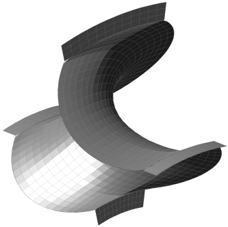 |
| FIG. 18 |
La figura 18 muestra la perspectiva de una superficie pasiva de simetría dinámica en la que se han añadido sobre sus bordes libres unos apéndices denominados alas de montaje. Estas alas de montaje son simplemente prolongaciones de la estructura de la superficie que pueden ser empleadas de diversas formas según la conveniencia de la aplicación. Están presentes en la superficie pasiva porque tiene bordes libres, pero podrían estar en la activa si también los tuviera. Normalmente servirán como cojinete para transmitir esfuerzos a la estructura de la turbomáquina en la que el rotor se integra, también como superficie contra la que realizar un sello de estanqueidad, como soporte para accesorios que deban ser accionados directamente por el rotor y como punto de anclaje con otros elementos. Cuando la turbomáquina integre varios rotores es probable que tanto el sellado como la transmisión de esfuerzos deban realizarse entre los propios rotores además de entre los rotores y la turbomáquina. Adicionalmente las alas de montaje acogerán los contrapesos que se deriven de la operación de equilibrado del rotor.
La siguiente figura muestra perspectivas de un generador eléctrico seccionado que sirve para ilustrar diversos aspectos. El rotor de láminas de simetría dinámica para flujo axial está dotado de alas de montaje 22 que permiten realizar la función de cojinete y sello de estanqueidad así como soporte para un anillo exterior 23 y otro interior 21.
Si bien, desde el punto de vista operativo, esos anillos no son imprescindibles, se hacen convenientes por tratarse de elementos estructuralmente continuos que pueden conformarse con diseños más elaborados exigiendo para ello tan solo un torneado. Obviamente los anillos podrían unirse a las láminas sin requerir la existencia de alas de montaje. Pueden ser empleados para desempeñar las mismas funciones que las alas de montaje y, en particular, como chasis de anclaje para las superficies de simetría dinámica en rotores desmontables. Una técnica razonable para la construcción de rotores desmontables para flujo axial o mixto será utilizar como elemento constructivo al conjunto resultante de unir mediante soldadura una superficie activa, que no tiene alas de montaje, y una superficie pasiva, que sí tiene alas de montaje en sus bordes libres.
Adicionalmente, el anillo exterior 23 alberga como accesorios a los elementos electromagnéticos móviles 9 que interactúan con los elementos fijos 10 alojados en la estructura de la máquina.
 |
| FIG. 19 |
Tras eliminar de la vista al rotor y sus anillos se muestra a continuación un detalle de la cámara de combustión de ese generador que se encuentra en su zona central. El flujo de aire que se comprime 3 entra en la voluta espiral de compresión tras abandonar los canales de compresión del rotor y llega, ya comprimido, a la cámara de combustión donde recibe energía térmica. Después el flujo de gases calientes 2 es conducido desde la cámara de combustión a los canales de expansión del rotor a través de la voluta espiral de expansión.
| 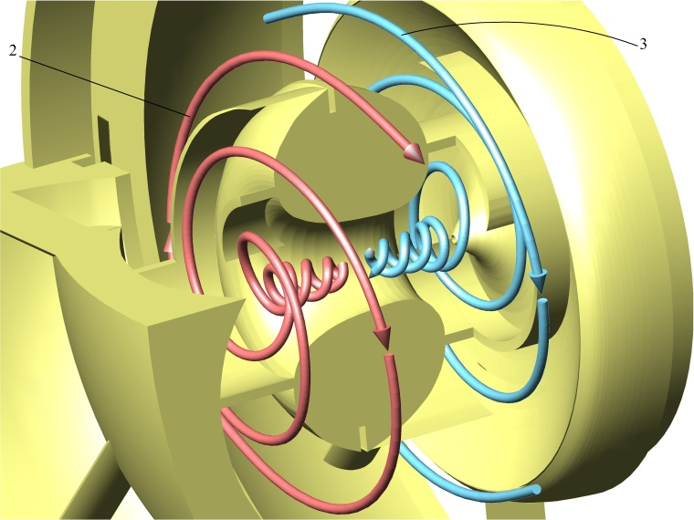 |
| FIG. 20 |
 |
Ventajas
Es de esperar que este tipo de diseños
presente varias ventajas
ya que
se acorta la longitud y el peso del motor
eliminando la necesidad de un
eje que transmita la potencia desde la turbina
hasta el compresor, se
refrigeran los materiales de los rotores
permitiendo mayores
temperaturas y menor proporción de exceso
de aire, la propia
acción de refrigeración implica un
efecto recuperador de
calor que mejora la eficiencia térmica, las
láminas
están sometidas a una menor tensión
mecánica
gracias a la compensación parcial de la
presión del
fluido por ambas caras de sus superficies. La
obligación de
cruzar el
fluido que se comprime y el que se expande en el
mismo rotor no implica
necesariamente tener que provisionar secciones
sensiblemente mayores
que en un
rotor convencional, pues lo que se consigue con la
simetría
dinámica es
aprovechar los espacios sin uso que
quedarían en el interior de
los álabes del
rotor convencional, sobre todo si se pretenden
usar geometrías
de alta presión. Tampoco es
desdeñable
el hecho de que la menor inercia de los rotores
pueda permitir emplear
como procedimiento de arranque la
proyección de un chorro de
aire comprimido directamente en las cámaras
de combustión
pudiendo así reemplazar otros sistemas
convencionales más
pesados y lentos.Con el criterio de simetría dinámica se renuncia a la metodología clásica de diseño 2D y se aprovecha la potencia de las herramientas de ingeniería actuales para concentrar el esfuerzo tecnológico en el diseño de la geometría 3D no convencional de dos tipos de lámina alabeada y su posterior manufactura. Aunque esta tecnología se encuentra en una fase muy temprana de su desarrollo, es necesario mencionar que, aparte de las ventajas operativas, también se han depositado esperanzas en que la técnica de construir los rotores esencialmente uniendo dos tipos de lámina alabeada constituya un importante avance en el proceso industrial de la fabricación de turbinas de gas.
|
Aplicación
industrial
Si bien las ventajas
pretendidas son deseables en cualquier
aplicación de motores de
turbina de gas, el concepto de simetría
dinámica puede
ser particularmente útil en
la fabricación de
turbinas para pequeñas potencias y
microturbinas, unidades de
generación de
energía portátiles,
generación de energía
eléctrica distribuida, motores auxiliares
para
sustentación vertical en aviones VTOL,
generadores primarios en la propulsión
híbrida, motores
de turbina de arranque
rápido, turbosoplantes, etc.Una aplicación prometedora de esta tecnología se encuentra en el campo militar donde la fabricación automatizada de rotores de láminas de simetría dinámica desechables daría lugar a una nueva generación de plantas motrices muy económicas para accionamiento de máquinas de combate no tripuladas o misiles de crucero. En este tipo de plataformas, de un solo uso o con una esperanza de vida operativa limitada, en las que resulta deseable la máxima sencillez sin renunciar a la eficiencia, permitiría abaratar no solo los costes de producción sino también los de mantenimiento preventivo reduciendo estas operaciones a la sustitución integral de los rotores.
|
Comparativa
con
el estado de la técnica anterior
Es bien conocido que uno de los
factores más limitantes para el
diseño de turbinas de gas es la alta
temperatura de
combustión necesaria para un buen
rendimiento, pero que afecta
negativamente a la resistencia de los materiales.
Para solventar este
problema, aparte de mejorar las aleaciones, se han
propuesto diversas
técnicas cuyo objetivo es refrigerar los
álabes de la
turbina de gases calientes permitiendo que
trabajen a mayores
temperaturas. Existen sistemas basados en proveer
a los álabes
de circuitos de refrigeración mediante
esquemas de acanaladuras
más o menos complejos por donde debe
circular un fluido
refrigerante. Otro sistema consiste en emplear
materiales porosos o
practicar orificios en puntos estratégicos
para conseguir que la
superficie del
álabe quede recubierta de una fina
película de un gas
frío inyectado a presión desde su
núcleo que lo
aísla de la alta temperatura
de los gases procedentes de la combustión.
Hay otro sistema
más
en el que se explota la idea de emplear los
álabes huecos de una
turbina axial convencional también como
compresor radial
haciendo circular el aire fresco a través
de su interior antes
de entrar en el combustor para después
redirigir mediante un
bucle los gases calientes procedentes del
combustor contra los
álabes de la turbina axial. De este modo se
consigue refrigerar
los álabes de la turbina que son
simultáneamente bomba
radial y motor axial.Este sistema de los álabes huecos, aunque no puede considerarse propiamente un antecedente, sí presenta un importante paralelismo con el criterio de simetría dinámica ya que también aquí es el aire fresco que se va a comprimir el que se encarga de refrigerar directamente las superficies del rotor que están en contacto con los gases procedentes del combustor haciendo que funcione a la vez como bomba y como motor. Sin embargo, la idea de concebir un álabe hueco como un tubo por el que también puede circular radialmente el aire, aunque útil y muy intuitiva, impone ciertas limitaciones potencialmente incómodas pues condiciona definitivamente la configuración de la máquina al disponer la salida de aire comprimido hacia la periferia y, a la vez, condiciona las transiciones del flujo radial desde y hacia el rotor por la geometría tubular de los álabes. Estas limitaciones pueden soslayarse gracias a la estrategia de la simetría dinámica que proporciona perfiles de entrada y salida suaves sin la necesidad de añadir elementos extraños para eliminar discontinuidades en el flujo y, al mismo tiempo, permite soluciones constructivas innovadoras respecto a la de los álabes huecos eliminando los condicionamientos de la compresión radial y de las formas convencionales de álabes existentes.
|
Advertencia
por prejuicio de rechazo a lo desconocido
El miedo y el escepticismo
ante una idea nueva o un cambio radical es una reacción natural,
pero puede resultar en una
percepción engañosa de una realidad
que es mucho más simple de lo que parece.
Todos los motores de turbina de gas tienen un
compresor, una turbina de
gases calientes y, si las circunstancias lo
permiten, un sistema de
refrigeración y un recuperador de calor
para aumentar su
rendimiento. Las turbinas de simetría
dinámica tienen
exactamente los mismos elementos, pero gracias a
su arquitectura
innovadora todos esos elementos se integran de
forma simple en un
único rotor ligero y compacto. Por todo
ello la
simetría dinámica no ha sido
concebida
en ningún momento como una
tecnología hipotética,
es decir, no se investiga para
averiguar si puede funcionar, sino para averiguar la mejor manera de
que funcione.
Sin embargo, durante
la fase de difusión de esta
tecnología se ha
podido constatar que algunas personas sufren un
"efecto rechazo"
inmediato e irreflexivo al ver la geometría de un rotor
de láminas de
simetría dinámica. El funcionamiento
de los rotores y las
curvaturas de las superficies, muy alejados de lo
convencional, a veces
provocan que la primera impresión sea que
se trata de algo
extraordinariamente complejo y que, probablemente,
presente problemas
de calidad de flujo que lo hagan
difícilmente viable.
Es cierto que los canales por los que circula el
fluido en un rotor de
láminas de simetría dinámica
están cerrados
por superficies con alabeos llamativos que
confieren a los mismos
formas caprichosas.
 |
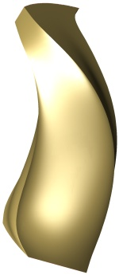 |  |
||
| FIG. 38 |
FIG. 39 | FIG. 40 |
En las figuras anteriores se han ilustrado diferentes perspectivas de uno de estos canales con formas tortuosas y delimitados por superficies con alabeos extraños. A primera vista se podría intuir que semejante geometría no es la idónea para conseguir un flujo en condiciones óptimas para el trabajo de una turbina.
 |
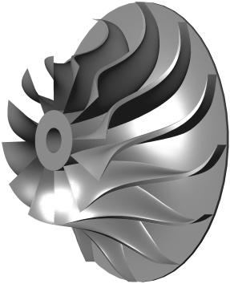 | |
| FIG. 41 |
FIG. 42 |
El rotor de las figuras anteriores corresponde a un compresor centrífugo, absolutamente convencional y no particularmente moderno, similar al que se usa en muchas turbinas de gas de pequeña potencia o en los sistemas de sobrealimentación de los motores de explosión. Puesto que es convencional, su visionado no provoca la impresión de que sea especialmente probable que aparezcan problemas de calidad de flujo cuando el fluido circule por sus canales. Las figuras 38, 39 y 40 no corresponden al canal de un rotor de láminas de simetría dinámica sino al de este rotor centrífugo convencional. Y a pesar de la convencionalidad de su arquitectura, cualquier experto sabe que si está mal diseñado o simplemente se le hace funcionar fuera de sus parámetros de diseño, también funcionará de manera deficiente.
 |
 |
|
| FIG. 43 |
FIG. 44 |
| 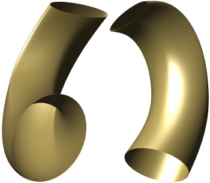 |  |
|
| FIG. 45 |
FIG. 46 |
| 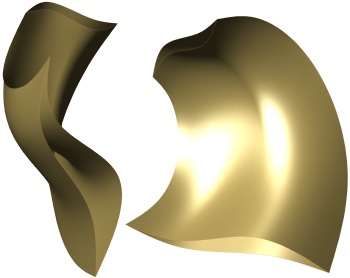 |
| FIG. 47 |
Su viabilidad física nunca ha estado en cuestión, pero, como con cualquier otra novedad, existe incertidumbre y la prudencia exige que se proceda de modo sistemático llevando a cabo investigaciones que arrojen resultados cuantitativos. Simplemente se planifican estudios de detalle que permitan descubrir las mejores prácticas de diseño al aplicar la filosofía de simetría dinámica con el fin de poder aprovechar sus ventajas y conocer sus limitaciones y peculiaridades.
Asociar un alto grado de innovación con una alta probabilidad de mal funcionamiento sin ninguna explicación es, sencillamente, una predisposición conductual absurda. Al final, el buen o mal funcionamiento de un diseño dependerá de la calidad del trabajo de ingeniería que se haya invertido en él, tanto en una turbina convencional como en una no convencional. Y por este motivo el experto que estudia por primera vez el criterio de simetría dinámica debe estar prevenido ante la posibilidad de sufrir este prejuicio cognitivo, relativamente común, que desencadena conclusiones espurias no fundadas en un análisis científico cuidadoso sino en una primera impresión subjetiva y precipitada de algo que rompe con lo establecido.
Aunque el criterio de simetría dinámica pretende simplificar y mejorar la construcción de turbinas de gas, se debe tener presente que las características de las láminas de simetría dinámica casi nunca podrán ser asimiladas a una geometría bidimensional por lo que su comprensión requiere de una capacidad de visión espacial suficientemente desarrollada y herramientas de ingeniería 3D.
|
Investigaciones en curso
Consideraciones
de diseño elementales para una microturbina
Uno de los grandes desafíos actuales en la
industria de las
turbinas de gas es la fabricación de
turbinas de muy
pequeña potencia que sean capaces de
ofrecer rendimientos
similares a los de las grandes turbinas. La
microturbina más
sencilla posee una etapa de compresión y
una de expansión
acopladas en el mismo eje. Con esta premisa se
efectúa un
análisis cualitativo de algunas de las
características
que influirían en el diseño de una
microturbina equipada
con un único rotor de láminas de
simetría
dinámica. |
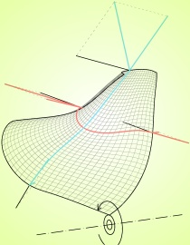 | |
| FIG. 22 |
FIG. 23 |
Por lógica, la parte accesible del eje se encuentra en la zona de aspiración protegido del calor y elementos agresivos de los gases de exhaustación. Además, ello permite equilibrar un poco la geometría del rotor ocupando espacio en la abertura de aspiración, que por cuestiones termodinámicas necesita una sección de paso menor que la de exhaustación.
Hay que recordar que tanto la superficie de presión como la de succión delimitan simultáneamente tanto a los canales de compresión como a los de expansión y, por consiguiente, la geometría de cualquiera de ellas influye en ambos tipos de canales. Sin embargo, es cierto que en los canales de compresión influye principalmente la curvatura en una determinada dirección, mientras que en los canales de expansión influye principalmente la curvatura en la otra dirección, tal y como se representa en la figura 23.
La corriente de fluido más energética es la que sale de la cámara de combustión, motivo por el cual las consideraciones que se realicen respecto a las curvaturas principales de los canales de expansión van a condicionar la velocidad de rotación, velocidad a la que posteriormente habrá que adaptar las curvaturas principales de los canales de compresión.
La amplitud de la sección de entrada de los canales de expansión será mayor cuanto menor sea la componente paralela al plano axial del vector velocidad absoluta con el que los gases que salen del combustor inciden sobre los canales de expansión. Aunque la simetría dinámica permite un diseño flexible, para conseguir geometrías menos forzadas, sobre todo la superficie de succión, se hace conveniente proveer una sección de entrada no demasiado estrecha en los canales de expansión. Ello se consigue haciendo que el ángulo de incidencia de los gases procedentes del combustor sea lo suficientemente tangente a la turbina. Esto también contribuirá a que el empuje aerodinámico axial correspondiente a los canales de expansión sea más reducido.
Una vez elegida la velocidad de rotación en función de las necesidades de los canales de expansión, normalmente se obtendrá como resultado que la salida de los canales de compresión es sensiblemente estrecha en comparación con la entrada. Ello no supone ningún problema de diseño ya que por la otra cara de esa zona de la superficie activa el canal de expansión es muy fino y conduce una pequeña proporción del flujo de expansión.
Para conseguir una velocidad de rotación no demasiado alta en una turbina con una sola etapa de expansión, que tiene que absorber toda la potencia, se trabajará con geometrías de alta presión lo que implica que el área de paso de los canales se estrecha en su parte central respecto a la entrada o salida (fig. 50). Eso es algo que se consigue de forma natural al emplear la estrategia de simetría dinámica. Aun así, el diseño ofrece muchos grados de libertad y se puede recurrir a la técnica de ensancharlos por el centro para adecuar la sección de paso como se ilustra en las figuras 48 y 49.
| 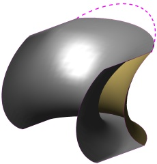 |  |
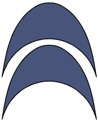 | ||
| FIG. 48 |
FIG. 49 | FIG. 50 |
El uso de geometrías de alta presión también conllevaría, en general, el uso de bordes de ataque afilados. Si bien es una decisión que depende de criterios fluidodinámicos, los bordes afilados pueden resultar particularmente interesantes si se prevé que la construcción del rotor se lleve a cabo mediante la soldadura de las láminas.
 |
| FIG. 51 |
Para comprobar hasta que punto se manifiesta este fenómeno se puede realizar un cálculo de mecánica de fluidos simple con la geometría preliminar del rotor obteniendo un conocimiento cualitativo de dicha distribución que mejorará el cálculo inicial de dimensiones de las secciones de entrada y salida de los canales del rotor.
Adicionalmente, mediante este cálculo también puede obtenerse conocimiento cualitativo útil sobre las distancias más adecuadas entre la superficie de presión y la de succión con el fin de evitar separación de flujo o vorticidad excesiva.
 |
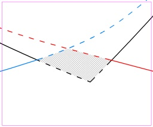 | |
| FIG. 52 |
FIG. 53 |
En la zona de unión con el eje (fig. 53) la interferencia entre las láminas crea un mazacote de material que sirve para unirlo con él. Aunque la geometría de la región de unión puede modelarse de una manera currentiforme sin problemas, esta zona no es particularmente importante desde el punto de vista fluidodinámico por lo que puede adaptarse fácilmente para cumplir su función. Dimensionar el eje es sencillo y como regla de diseño preliminar se puede establecer la norma de que el área de la superficie cilíndrica en la que las láminas se unen al eje sea igual o mayor que el área de la sección del propio eje.
Microturbina
de 100 kW: geometría del rotor
Como primer ejercicio de aplicación de la
estrategia de
simetría dinámica se proyecta una
microturbina de gas con
100 kW de potencia al eje configurada con un
único rotor de
flujo mixto. Este estudio permitirá
visualizar geometrías más realistas
y comparar los
resultados obtenidos con los de otras
microturbinas convencionales.
Para el
diseño se considerarán los
siguientes condicionantes:- La potencia al eje será de 100 kW ± 5 kW.
- El rotor estará fabricado en INCONEL 738 o material similar para turbinas.
- El combustible será gasolina o un combustible líquido similar.
- Aire estándar: 15 ºC, 760 mm Hg.
- Se utilizarán los márgenes de seguridad
habituales en la industria.
El primer paso para trabajar con la filosofía de simetría dinámica es liberarse de los prejuicios y condicionamientos que bloquean la originalidad y aclarar algunos conceptos que habrá que tener presentes durante todo el proceso:
- Innovar es esencialmente romper con lo establecido,
pero que algo no sea convencional no significa que sea absurdo o muy
complejo.
- Las trayectorias del fluido no necesitan ser bidimensionales o casi bidimensionales. El fluido puede describir trayectorias tridimensionales pues lo realmente importante son las condiciones termodinámicas al inicio y al final de dichas trayectorias.
- Las superficies por las que transcurre el fluido no necesitan ser aproximadamente desarrollables ni responder a perfiles bidimensionales extrudidos. Una geometría tridimensional con alabeo irregular también puede conducir correctamente al fluido si está adecuadamente diseñada.
- En muchas ocasiones un factor que produce efectos negativos simultáneamente provoca otros positivos que deben ser ponderados antes de descartarlo.
- Un rotor de láminas de simetría dinámica es a la vez compresor, turbina y recuperador de calor. Esa interacción provoca que su diseño tenga más grados de libertad que los que hay en cada uno de los elementos por separado, pero solo se diseña un elemento y no tres.
 |
|
|||
| FIG. 21 |
FIG. 22 | FIG. 23 |
A continuación se trabaja en el modelador 3D para diseñar una superficie de presión de simetría dinámica suavizada y con los bordes orientados según los vectores de velocidad del fluido relativos a la superficie.
 |
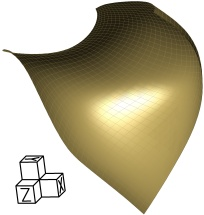 |  |
||
| FIG. 24 |
FIG. 25 | FIG. 26 |
Como era previsible, las muy diferentes propiedades termodinámicas del fluido que se comprime y el que se expande provocan que la geometría real se aleje bastante de la teórica simetría. Obsérvese que los canales de compresión tienen su salida orientada perpendicularmente al eje de giro para evitar la componente axial de los empujes generados por el flujo de aire que se comprime a la vez que ese mismo empuje contrarresta la fuerza centrífuga sobre las láminas. Disminuir la presión en la descarga de los canales de compresión fuerza a que la velocidad del flujo aumente. Ello podría no tener sentido en un diseño convencional, pero en el rotor de láminas de simetría dinámica la consiguiente disminución de temperatura podría mejorar la refrigeración por lo que es un factor a ponderar.
Tras elegir de manera tentativa el número de superficies de presión ya puede visualizarse el aspecto del rotor a falta de las superficies de succión. Hay que considerar que un número elevado de láminas empeora la fabricabilidad y aumenta la superficie de contacto con sus pérdidas asociadas, pero a la vez disminuye la carga sobre las mismas y mejora el efecto recuperador de calor.
| 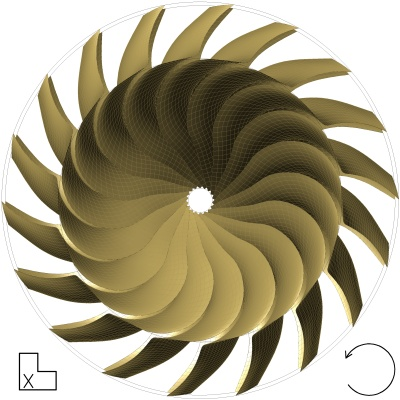 |  |
|
| FIG. 27 |
FIG. 28 |
| 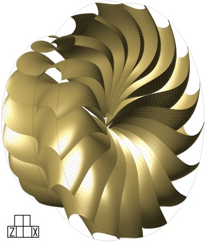 |  |
|
| FIG. 29 |
FIG. 30 |
Para diseñar la superficie de succión de simetría dinámica se parte de las curvas que definen la de presión y se deforman convenientemente para que los canales de compresión y expansión tengan la dimensión adecuada a las condiciones termodinámicas de sus respectivas corrientes de fluido.
Obsérvese que en el rotor de láminas de simetría dinámica los canales son afinados en la zona de unión de la lámina de presión con la de succión por lo que el diseño de la geometría de la zona central es prioritario respecto al diseño de los bordes que conducen una proporción menor del flujo.
 |
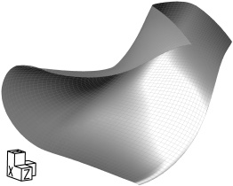 | 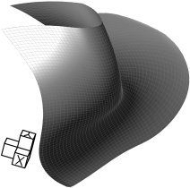 | ||
| FIG. 31 |
FIG. 32 | FIG. 33 |
| 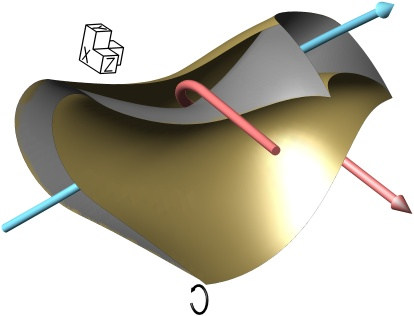 | 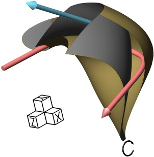 | |
| FIG. 34 |
FIG. 35 |
Finalmente se obtiene el diseño preliminar completo del rotor de la microturbina. Tras asignar espesores provisionales a las láminas y mallar el modelo, este puede ser introducido en el programa de cálculo en el que se irán ensayando distintas configuraciones de cantidad de combustible inyectado, velocidad de rotación, espesores, número y geometría de las láminas hasta obtener el resultado óptimo. A pesar de que este diseño preliminar esté fundamentado en cálculos técnicamente coherentes, son muchos los grados de libertad y es de esperar que el proceso de optimización conduzca a un diseño sustancialmente evolucionado. Además, fenómenos a prevenir como separación de flujo, inestabilidad o vibraciones también pueden influir decisivamente en el diseño final.
 |
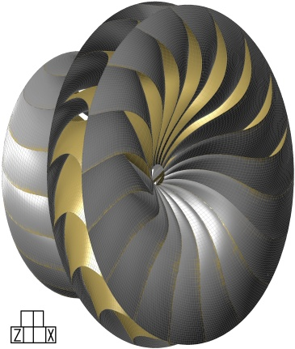 | |
| FIG. 36 |
FIG. 37 |
Microturbina
de 100 kW: configuración final
Vistas ilustrativas del rotor deshojado resultante
de la
optimización:| 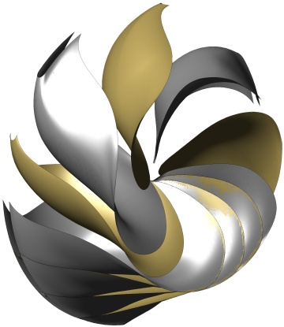 | 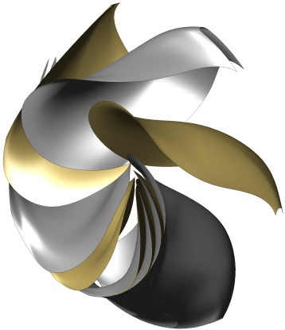 | |
| FIG. 54 |
FIG. 55 |
Una vez optimizada la geometría de las láminas queda ultimar los detalles pertinentes para su configuración final. Las alas de montaje 22 en los bordes libres de la superficie pasiva servirán como apoyo para transmitir los esfuerzos a la carcasa y como sello de estanqueidad. La disposición elegida permite el fácil ensamblaje axial de toda la turbomáquina. Asumiendo que para el prototipo se empleará un combustor simple externo en vez de una cámara de combustión anular, solo son necesarias tres piezas para la carcasa: una tobera de aspiración; un bloque que integra el difusor, el inductor y los colectores de compresión y expansión; una tobera de descarga. Normalmente las alas de montaje del rotor apoyarán sobre unos cojinetes específicamente diseñados para ello.
 |
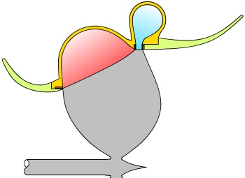 | |
| FIG. 56 |
FIG. 57 |
En el caso de que el rotor se manufacture soldando las láminas, el procedimiento sugerido consistiría en una primera fase en la que se sueldan por parejas una lámina de presión y una de succión. En la siguiente fase se colocan todas las parejas del rotor en un bastidor de posicionado para soldarlas entre sí. En la última fase se suelda el eje al conjunto de láminas obtenido en la fase anterior. Normalmente habrá una fase adicional en la que se rectificarán las alas de montaje para asegurar que su geometría está dentro de tolerancia y se repasarán las uniones soldadas.
Finalmente se obtiene un rotor compacto, ligero, autorrefrigerado y con un intercambiador de calor integrado. A continuación se muestran varias vistas del rotor con el eje y las alas de montaje (se ilustran todos los elementos en el mismo color).
| 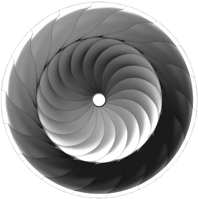 | 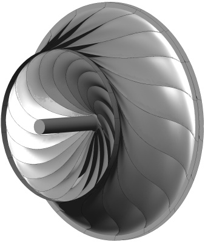 | |
| FIG. 58 |
FIG. 59 |
 |
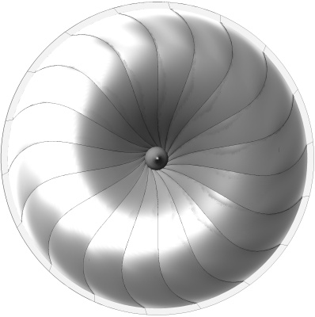 | |
| FIG. 60 |
FIG. 61 |
La turbomáquina ensamblada lista para conectar al combustor:
| 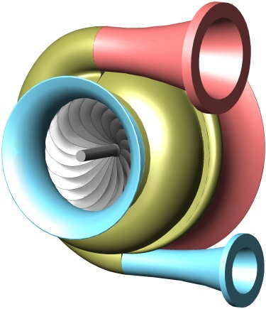 | 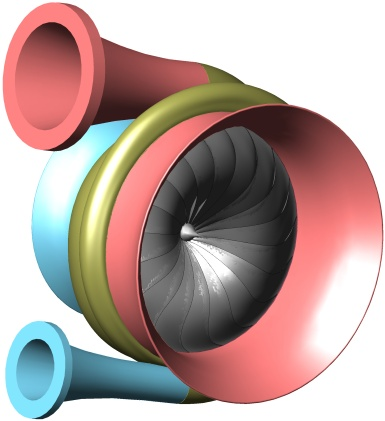 | |
| FIG. 62 |
FIG. 63 |
La configuración de la turbomáquina permite un fácil ensamblaje axial. En la siguiente figura se muestra un despiece que, en orden de montaje de izquierda a derecha, comprende: tobera de aspiración, bloque de volutas, cojinete de empuje transversal, cojinete de empuje axial, rotor, cojinete de empuje axial, tobera de descarga.
 |
| FIG. 64 |
Las siguientes figuras muestran un corte de la turbomáquina:
 |
 |
|
| FIG. 65 |
FIG. 66 |
Todos los ejercicios realizados en las anteriores investigaciones constituirán una valiosa guía de buenas prácticas y lecciones aprendidas para el diseño definitivo de un demostrador tecnológico que pueda ser ensayado en un banco de pruebas. Antes de dar este paso deberán tomarse algunas decisiones trascendentes como elegir el proceso de fabricación del rotor, seleccionar la aleación con la que se va a manufacturar el rotor adecuada a dicho proceso, o si se va a aplicar algún material de recubrimiento, sobre todo si afecta a la conductividad térmica de las láminas.
|
Acerca de este documento
Este artículo ha sido redactado como instrumento para divulgar la tecnología de las turbinas de simetría dinámica a partir de la memoria descriptiva que integra la solicitud de patente internacional PCT/ES2012/000078.Solicitud de patente original registrada PCTES2012000078
Solicitud de patente traducida al inglés PCTES2012000078_EN
Solicitud de patente original publicada WO2012098277
Informe de búsqueda internacional ISR
Enlace permanente al sitio web de la WIPO http://patentscope.wipo.int/search/en/WO2012098277
Este documento puede ser reproducido citando la fuente. Las imágenes están enlazadas a sus originales en alta resolución.
|
© 2012-2013 Juan Andrés Hurtado Baeza
-